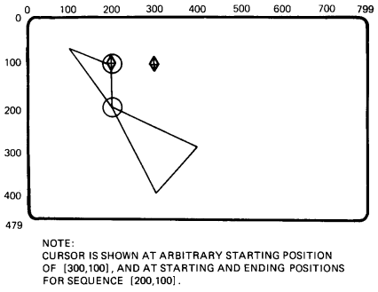

| Chapter 4 | Contents | Chapter 6 |
You use vector commands to draw lines. The terminal draws a line between the cursor position and the position you specify in a vector command. Usually, the terminal draws solid lines that are 1 pixel wide. However, you can change the appearance of lines by using the options for the write control command (Chapter 3).
There are four basic options for the vector command.
This chapter includes several examples of figures drawn with vector commands. The following write control and screen command values are in effect for these examples.
Write Controls in Effect
W(N0,I0,F3,P1(M2),V,M1,S0)
where
W identifies the write control command.
| N0 | = | negative writing off. |
| I0 | = | foreground writing uses output map location 0 (with default setting of dark). |
| F3 | = | writing affects both bitmap planes. |
| P1(M2) | = | writing uses standard pattern 1, with a multiplication factor of 2. |
| V | = | overlay writing is in effect. |
| M1 | = | PV multiplication factor is 1. |
| S0 | = | shading is off. |
Screen Controls in Effort
S(I3,T0,A[0,0][799,479])
where
S identifies the screen control command.
| I3 | = | background shade/color is white (default for output map location 3). |
| A[0,0][799,479] | = | default screen address is in effect. |
This argument lets you draw a dot at the cursor position. The dot is a single pixel. You use the following format for the draw dot argument.
V[]
where
V identifies the vector command.
[] is a null position argument that tells ReGIS to draw a dot.
This argument draws a straight line from the cursor position to a position you specify. ReGIS draws each line in the currently selected pattern (Chapter 3). The pattern repeats every 8 pixels. The default pattern is a solid line (P1).
If you use dotted or dashed lines, the results are unpredictable where lines intersect. However, you can start any line at the first position of the pattern by repeating the V command key letter.
You can specify the endpoint of a line in four different ways.
The arguments above are the same arguments used for the position command. See "Set Position Arguments" in Chapter 4 for the command format. For draw line commands, you would begin with a V instead of a P.
NOTE: You do not have to start a new vector command when you change argument types.
Figure 5-1 shows a simple bar graph drawn using absolute, relative, and absolute/relative positions. Figure 5-2 shows a graphic image of the PV directions used in the pixel vector system. The image was drawn using PV multiplication.
|
||||
|
|||
| NOTE: Cursor is shown at an arbitrary starting position [100,100], and at ending position [300,200]. |
A position stack is a set of coordinates that ReGIS uses in sequence. These options let you process a group of vectors as a unit. Both options use at least one start (or begin) option and one end option. You can embed position (P) and curve (C) commands in the options.
There are two types of position stack options.
You can use bounded position stacks to connect the last vector of a command to the starting position of the command. For example, you can use bounded position stacks to draw closed polygons.
The bounded position stack option for the vector command works in the same as in a position command (Chapter 4). At the beginning of the option, ReGIS saves the current active position by pushing the position onto the stack. At the end of the option, ReGIS returns the cursor to the saved position by popping the position off the stack.
You use the following format for a bounded position stack.
V(B)<embedded options>(E)
where
(B) saves the current active position by pushing the position onto the stack. This is the starting point for a line.
<embedded options> are the position, vector, curve, and other command options you use in the position stack option.
(E) returns the cursor to the position saved by the previous (B) option. (Pops the position off the stack.) ReGIS draws a line from the (B) position to the position specified before (E).
A bounded position stack option has at least one begin (B) option and one end (E) option. Each (B) option stores the coordinates of the current cursor position on the stack. Each (E) option returns the cursor to the position stored by the previous (B) option. A position stack can have up to 16 (B) options. For each (B) option, there must be a corresponding (E) option.
NOTE: The terminal saves cursor positions during bounded and unbounded stack options for vector (V) commands and position (P) commands (Chapter 4). The limit for unended, saved positions (including all save commands) is 16. However, for compatibility with other ReGIS products, use a maximum of eight.
Figure 5-3 shows an example of a graphic image drawn using a bounded position stack option. The stack has two (B) and (E) options, with embedded curve (C) commands. Figure 5-4 shows examples of simple graphic images drawn using bounded position stacks.
|  | ||
|
|
|||||||||||||||
An unbounded position stack works the same as a bounded one, except the active position does not move at the end of an unbounded stack. An unbounded stack begins with an (S) option rather than a (B) option.
The (S) option saves a dummy, or nonexistent position by pushing it onto the stack. When ReGIS comes to an (E) option, the cursor stays at the position specified before the (E) option. You use the following format for an unbounded position stack.
V(S)<embedded options>(E)
where
(S) saves a dummy position by pushing the position onto the stack.
<embedded options> are the position, vector, curve and other command options you use in the position stack option.
(E) pops the dummy position saved by the last (S) off the stack. The cursor does not move.
The unbounded position stack serves little purpose for images drawn with vector commands. This stack provides symmetry with the unbounded position stack of the curve command.
Figure 5-5 shows an image drawn with an unbounded position stack. The commands are the same ones used in the bounded position stack for Figure 5-3. You can compare the results.
|
|||
| NOTE: Cursor is shown at arbitrary starting position of [300,100], and at starting [200,100] and ending [100,50] positions for sequence. |
The write control options in Chapter 3 control the appearance of the images you draw. For example, these options control the shade or color of images. When you use vector commands, ReGIS uses the current settings for the write control options.
You can use a temporary write control option to temporarily change one or more of these settings for a vector command. The temporary values remain in effect until you use one of the following commands.
When you use one of the above commands, the writing control options return to their previous values.
You include the temporary write control option in your vector command. You can use any write control option from Chapter 3.
You use the following format for the temporary write control option.
V(W(<suboptions>)<arguments>)
where
W identifies a temporary write control option.
<suboptions> are the temporary write control values selected.
<arguments> are vector command arguments that will use the temporary write control values.
Figure 5-6 shows some images that use temporary write control options to change the drawing pattern used. For more complex examples, see the "Shading Control" section in Chapter 3.
| NOTE: Cursor is shown at arbitrary start position of screen origin [0,0], and at start and end positions for each graphic. Writing controls in effect are: W(N0,I0,V,P1(M2)), with I0 at default value of dark, background specifier at S(I3), and I3 at default value of white. |
|||||||||
|
|||||||||
Table 5-1 is a summary of the V command options. There are no default values for these options.
| Option | Description |
|---|---|
| [] | Draw dot |
| [X,Y] | Draw line (with coordinate) |
| <PV> | Draw line (with PV value) |
| (B) | Begin a bounded position stack |
| (S) | Start an unbounded position stack |
| (E) | End of bounded position stack End of unbounded position stack |
| (W(<suboptions>)) | Temporary write control |